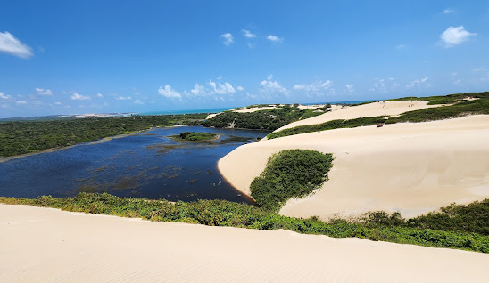
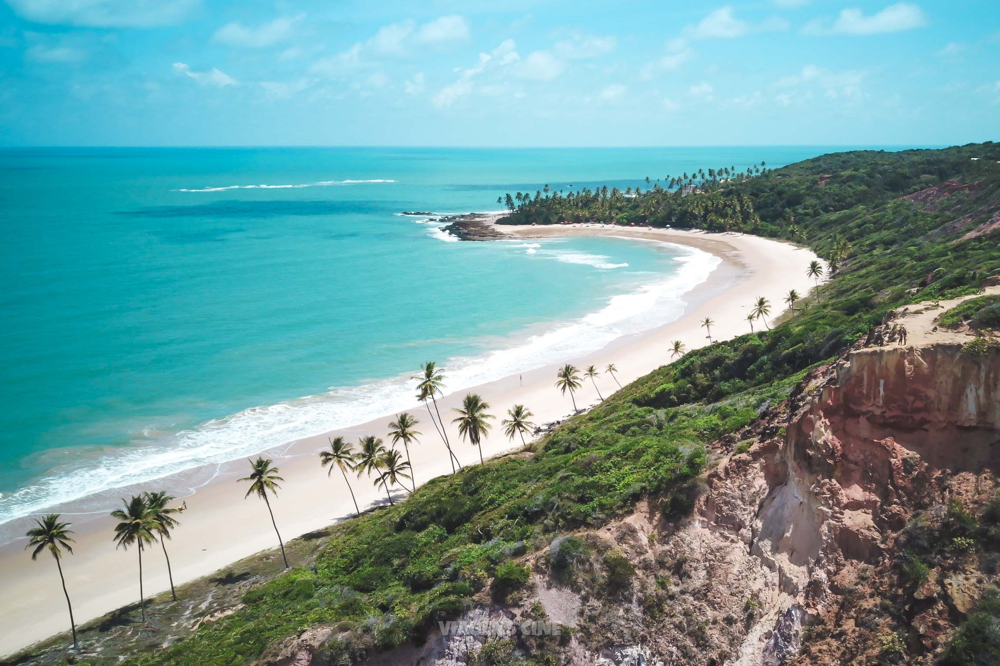
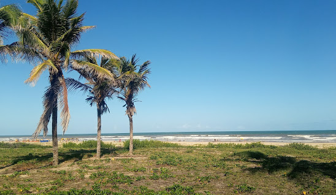
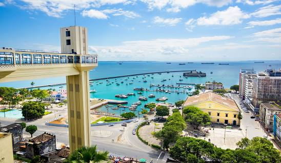
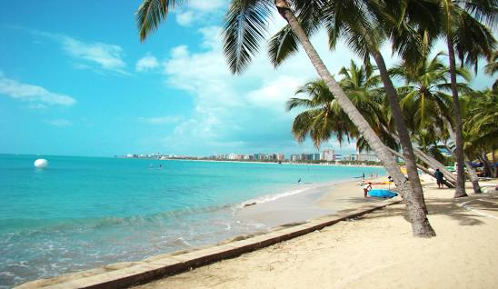

Ceará

Fortaleza
Fortaleza, a capital do Ceará, uma cidade muito turística principalmente pelo o maior parque aquático do Brasil, o Beach Park, que fica apenas 28 km de distancia da capital, tem um clima quente, ótimo para ir a praia como a praia de Iracema, Meireles e outrasEm Breve-->Hotéis & Apartamentos de Fortaleza
Rio Grande do Norte



Natal
Natal é a capital do estado de Rio Grande do Norte, na extremidade nordeste do Brasil. É conhecida pelas extensas dunas de areia costeiras e pelo Forte dos Reis Magos, em forma de estrela, uma fortaleza portuguesa do século XVI, também tem o passeio de buggy, que por experiência própria digo que é muito bom, então, se for para lá, não deixe de visitar!Em Breve-->Hotéis & Apartamentos do Rio Grande do Norte
Maranhão
São Luís
São Luis, a capital do Maranhão, pode uma cidade legal para você que gosta de história, já que tem muitos locais históricos como o Palácio dos Leões, a Catedral e etc porém também há muitas praias em São Luis como a Praia de São Marcos, Praia do Calhau, Praia do Meio, Praia Ponta d'Areia e etc.Em Breve-->Hotéis & Apartamentos de São Luis
Piaui
Teresina
Teresina, a capital do Piauí, é uma ótima cidade para passar alguns dias como apenas um dia, embora há vários pontos turísticos, não tem praias, porém, tem pontos como o Parque Da Cidade, o Jardim Botânico, o Parque Matias Matos e o Macáuba.Em Breve-->Hotéis & Apartamentos de Teresina
Paraíba

João Pessoa
João Pessoa, a capital do Paraíba, fica localizada ao leste do estado e tem ótimas praias para visitar como a praia do Cabo Branco, a Praia de Tambaú, a praia do Coqueirinho e etc. Porém, se não quiser praias, também há um park aquático conhecido como Acquaí Park, que também pode ser legal para você.Em Breve-->Hotéis & Apartamentos de João Pessoa
Sergipe

Aracaju
Aracaju é a capital do estado de Sergipe, na costa nordeste do Brasil. É conhecida pelas praias, incluindo a Praia de Atalaia, ao centro. Junto à praia, o Oceanário de Aracaju, em forma de tartaruga, possui arraias, tubarões, enguias e tartarugas marinhas, além de exposições práticas. O passeio na marginal, a Passarela do Caranguejo, está repleta de restaurantes de peixe e marisco e é marcada por uma enorme escultura de um caranguejo.Em Breve-->Hotéis & Apartamentos de Aracaju
Bahia

Salvador
Salvador, a capital do estado da Bahia no nordeste do Brasil, é conhecida pela arquitetura colonial portuguesa, pela cultura afrobrasileira e pelo litoral tropical. O bairro do Pelourinho é seu coração histórico, com vielas de paralelepípedo terminando em praças grandes, prédios coloridos e igrejas barrocas, como São Francisco, com trabalhos em madeira revestidos com ouro. Além disso, tem algumas praias, como a Praia Farol da Barra, Praia do Porto da Barra e a Praia do Flamengo.Em Breve-->Hotéis & Apartamentos de Salvador
Alagoas

Maceió
Maceió, é a capital do estado de Alagoas, na costa leste do Brasil. O seu centro histórico alberga casas coloniais cor de pastel, uma catedral do século XIX e o Museu Théo Brandão de Antropologia e Folclore, localizado numa mansão renovada à beira-mar. Protegida por um recife, a costa tem inúmeras praias de areia branca. A Praia de Ponta Verde oferece um passeio repleto de palmeiras, quiosques na praia e desportos aquáticos.Em Breve-->Hotéis & Apartamentos de Maceió
Pernambuco